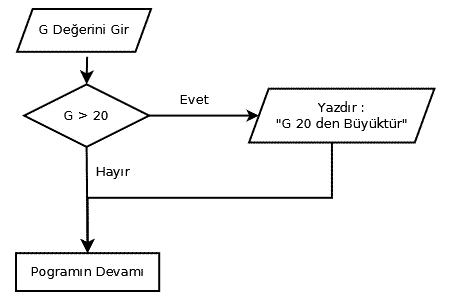
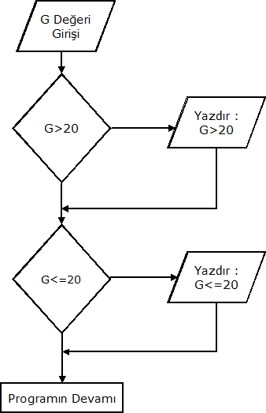
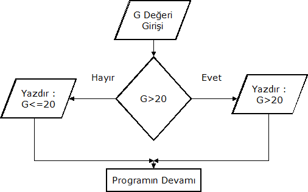

Ada Programlama Dili Temelleri
Bölüm 5
Program Akışının Yön Değiştirmesi
Bölüm 5 Sayfa 1
5.1 Yapısal Programlama Prensibi
Bilgisayar programları başlangıçtan sona kadar birbiri ardınca çalıştırılan bildirimler halinde devam etmez. Bazı durumlarda "Eğer şu koşul gerçekleşirse, program şu noktaya atlasın ve oradan devam etsin" şeklinde mantıksal bir karar mekaniziması sonunda program bir alt satırdan devam etmez ve mantıksal karar mekanizmasının belirttiği program adımından devam eder. Mantıksal karar adımının programın devam edeceği satırı belirtme yöntemi son derece önemli ve programın yapısını belirleyici bir yöntemdir. Buna kısaca atlama mekanizması adı verilir.
Bilgisayarların bilimsel ortamlarda yaygın olarak kullanılmaya başlandığı 1960 lardan 1980 lere kadar, bilgisayarlara kullanıcıların erişimi çok sınırlı olabilmiştir. O zamanlarda, bilgisayarlar büyük makinelerdi, ayrı odalarda tutulmaları, mekanisyenden başlayarak adına "Bilgisayar Uzmanı" adı verilen ve insanlara uzaydan gelmiş gibi tepeden bakan insanlar tarafından çalıştırılmaları gerekiyordu. Kullanıcıların makinelere erişimi günde bir iki defa olabilien ve adına "program alma" denilen bir işlemle, delikli kartlarını kart okuyucuya okutabilmeleriile sınırlıydı. Program alma işlemi sonucunda çoğunlukla hata mesajları ile dolu bir çıktı, kullanıcının eline tutuşturulur ve kullanıcı, program hatasından mı, yoksa işletim sisteminin karmaşık yöntemlerinden birinin ihlali sonunda mı oluştuğu belli olmayan kriptik bilgilerle dolu olan bir çıkış listesi ile başbaşa kalırdı. Kullanıcların bilgisayarlarla bu çok sınırlı ilişkisi, programcılara program dillerini yeterince tanımak ve uzmanlaşmak olanağını kısıtlı olarak sunabilmekteydi.
Kullanıcıların, bilgisayarlara çok kısıtlı erişimi nedeni ile çoğu kullanıcı, çalıştığı bilgisayarda bulunan derleyicileri bile yeterince tanıyamazdı. Bu dar olanaklı ortam, bilimsel programlar çalıştırmak isteyen kullanıcılara tek seçenek olarak FORTRAN programlama dilini bırakmıştır. FORTRAN modülarite olanakları sınırlı, program yönlendirme mekanizması, mantıksal koşul sonucunda programları belirli numaralı bir satıra atlatmaktan başka bişey olmayan bir programlama dilidir. Üstelik programların satır numaralarının birbirini izlemesi koşulu da olmadığından, bir iki atlama sonunda, programın izlenmesi neredeyse olanaksız hale gelmekteydi. Bu yönteme, "Basit GO TO" mekanizması adı verilmiştir. Bu olumsuz program yön değiştirme yöntemi, 1970 sonlarına doğru kullanıma giren basit BASIC programlama dili ile devam etmiş ve 1980 lerin bilgisayar yaygınlaşmasının ilk evresi bu basit BASIC yöntemi ile geçmiştir. Bunun sonucunda hiçbir zaman kalıcı olamamış ve genel kullanım için uygun olmayan izlenmesi olanaksız derecede zor olan programlar ortaya çıkmıştır.
Bu olumsuz duruma son veren olay, 1980 lerin başlarında ortaya çıkan Pascal programlama dili olmuştur. Pascal, çağının çok ilerisinde bir bilgisayar dili idi ve programlarının modüler yapısı yanında, program yönünün değişmelerini mantıksal temele dayandıran ilk yaygın programlama dili olmuştur. Pascal aynı olanaklara sahip fakat bilgisayarlara yeterli erişimin sağlanamaması nedeni ile fazla yaygınlaşamamış ALGOL programlama dili sınıfından bir progamlama dilidir. Pascal programlama dilinin gelişmesi, önce Modula-2 sonra da Ada programlama dilinin oluşmasına olanak sağlamıştır.
Program yönünün değişmesine kısaca program dallanması (branching) adı verilir. Pascal, program dallanmasını, belirli bir satıra atlatma yöntemi olan GO TO yönteminden, "eğer şu koşul gerçekleşirse, bu işlemleri yap, gerçekleşmezse şu işlemleri yap" olarak açıklanabilen mantıksal program dallanması yöntemine taşımıştır.
Program dallanmasında mantıksal program dallanması yönteminin kullanılmasına "Yapısal Programlama Yöntemi" adı verilir. Yapısal programlama yöntemi 1960 yıllarından beri bilinmesine karşın ancak son yıllarda yaygınlık kazanmış ve günümüzde yegane uygulanan modern program yazım tekniğidir. Yapısal programlama yöntemi kullanılarak geliştirilmiş programlarda modülerlik, parçaların yeniden kullanılabilmesi ve program yürüşünün kolayca izlenebilmesi olanağı sağlanabilmektedir.
Yapısal programlama tekniği, parçaların daha küçük parçalara bölünerek çözümlenmesini sonra da çözümlenmiş parçaların yeniden birleştirilerek tüm problemin çözümünün sağlanması yöntemini uygular. Bir problem, modüler parçaların biraraya getirilmesi ile çözümlenir ve bir problemin çözümünde kullanılmış bir modül, başka bir programda da aynı amaçla kullanılabilir. Yapısal programada modüllere sadece giriş ve çıkış yapılarak iletişim sağlanır. Modülün iç yapısının dış ortamdan soyutlanmış olması gerekir. Ada programlama dili, bu olanakları en ileri düzeyde sağlar ve program parçalarının modülaritesini en gelişkin şekilde düzenler. Yani, Ada programlama dili, yapısal programlama açısından modernitenin erişebileceği en son aşama sayılabilir.
Ada programlama dili, yapısal programlama tekniği yanında, programcılara eski GO TO yöntemini de uygulayabilme olanağı sağlar. Bu yöntemin, olanaklar ölçüsünde çok az veya en iyisi hiç kullanılmaması sağlık verilir. Günümüzde, program tasarımında yapısal programlama teknikleri ile sağlanmış olan ilerleme yanında geri ve kaçınılması gereken GO TO tekniklerinin kullanımının hiçbir nedeni yoktur. Bazı durumlarda GO TO yönteminin sunabileceği geçici kolaylıklara kapılmamalı, bazen zor, belki daha uzun, fakat kesinlikle daha sağlam ve okunabilir yapısal programlama yöntemlerinin sıkı sıkıya uygulanmasında yarar bulunmaktadır.
5.2 Mantıksal Program Dallanması
Programların mantıksal olarak dallanması, if , then , else yapılanması ile gerçekleşir. Bu yapılanmanın sözdizimi aşağıda görülmektedir:
if_statement ::=
if condition then
sequence_of_statements
{elsif condition then
sequence_of_statements}
[else
sequence_of_statements]
end if;
condition ::= boolean_expression
Bu yapılanmada koşul, mantıksal bir ifadedir. Mantıksal ifade, sonucu Boolean olan bir ifadedir. Bu ifade tek ilişkisel bir işlemciden oluşan basit bir ifade olabileceği gibi, çok sayıda ilişkisel ve mantıksal işlemcilerin kullanıldığı kompleks bir mantıksal ifade de olabilir. Tek koşul, sonucun mantıksal bir değere indirgenebilmesidir.
Programlarda, if , then , else yapılanmasına karar yapılanması adı verilir. Her karar yapılanması, program yürüyüşünün yönünü, mantıksal olarak değiştirir. Aşağıdaki şema, bunu açık olarak belirtmektedir.

Şekil 5.2-1 Basit Karar Mekanizması
Yukarıdaki akım şemasından görüldüğü gibi, program yürüyüşü, karar mekanizması sonucunda yön değiştirmektedir. Karar mekanizması aşamasında, eğer (if) G değeri 20 den büyükse, program sağa doğru yönelmekte ve bir mesaj yazdırılmakta ve bu mesaj yazımı tamamlanınca, program karar mekanizmasından bir sonraki satırdan devam etmektedir. Yoksa, yani karar mekanizması aşamasında G değeri 20 den küçükse, program mesaj yazdırma bildirimini pas geçmekte ve doğal işleme sekansına devam ederek, yine karar mekanizmasının bir sonraki satırından devam etmektedir.
Karar mekanizmasının çalışması sonucunda, koşul gerçekleşirse (if(koşul = true), program sağ tarafa yönlenmekte ve orada belirtilen bildirimleri çalıştırmaktadır. Bu bildirimlerin sonunda, programın tamamlanması bildirilmezse, program kesinlikle karar mekanizmasından bir sonraki satıra geçecektir. Şekil 5.2-1 deki akım şemasından bu çalışma şekli açıkça görülmektedir.
Aşağıdaki prosedürde Şekil 5.2-1 deki akım şemasında belirtilen programın çalışması görülmektedir.
with Ada.Text_IO; with Ada.Integer_Text_IO; procedure b5_2_uyg_1 is G : Integer; begin Ada.Text_IO.Put(Item => "Lütfen Bir Tamsayı Giriniz : "); Ada.Integer_Text_IO.Get(Item => G , Width => 5 ); if G > 20 then Ada.Text_IO.Put_Line("G Değeri 20 den Büyüktür !"); end if; Ada.Text_IO.Put(Item => "Program Tamamlandı ! "); end b5_2_uyg_1;
Yukarıdaki prosedürün çalışmasının sonucu, girilen G değerine göre iki olasılıklı olarak şekillenir.
Eğer girilen G değeri 20 den büyükse, program sonucu,
Lütfen Bir Tamsayı Giriniz : 60
G Değeri 20 den Büyüktür !
Program Tamamlandı !
şeklinde olmaktadır.
Eğer girilen G değeri 20 den küçükse, program sonucu,
Lütfen Bir Tamsayı Giriniz : 15
Program Tamamlandı !
şeklinde olmaktadır.
Yukarıdaki prosedürden de görüldüğü gibi, karar mekanizmasında bir tek sınama sonucu ( doğru veya yanlış), programın da yönlendirilebileceği bir tek yön seçimi ( sağ veya sol) gerçekleşebilir. Bir üçüncü olasılık ve bir üçüncü yol yoktur. Burada, konuyu iyi bilmeyenlerden gelen bilgisayarlarda esneklik olmadığı ve herşeyin ya siyah ya da beyaz olabildiği eleştirisi üzerinde duralım. Aslında gerçekten bir üçüncü yol yoktur ve ertelenen çözümler sadece daha fazla aacılı geçecek bir sürece malolur. Sonuçta ya siyah, ya beyaz bir karar vermek, bir yönde saf tutmak gerekir. Her zana verilen kararların doğru olacaklarını umalım ve sözü büyük şair Vergilius' bırakalım, Montaigne, Vergilius' den alıntı yapmıştır:
anlamı : Ortada duranlar, sanki başka bir yol yokmuş gibi, olayları bekliyor, ve kaderin kendi yararına çalışmasını umuyor... şeklindedir. Yorumu okuyuculara bırakıyorum.
Yukarıdaki prosedürde programın yönlendiği yönde, sadece bir tane uygulanacak program satırı bulunmaktadır. Bu yüzden if (koşul) dan sonra sadece tek bir bildirim ve sonra end if ile blok tamamlanmıştır. Eğer birden fazla çaılıştırılacak bildirim bulunuyorsa, her bildirim ; ile tamamlanınca bir alttaki bildirime geçilir ve ardarda bildirimler tamamlandığında otomatik olarak bloktan çıkılmış olur. Fakat eğer istenirse, bir blok açıp, tüm bildirimler aşağıda görüldüğü gibi, bir blok içine alınabilir.
if koşul then begin Bildirim(1)... ... Bildirim(n-1)... Bildirim(n)... end; end if;
Yukarıdaki prosedürden de görüldüğü gibi, Ada programlama dili, başka program dillerine göre, en temiz if bloğu yazılımına sahip olan program dilidir. Yazılım son derece temiz ve nettir. Yazılım, karar mekaniziması sonucuna göre programın yönleneceği yönü, yönlendiği yerde yapılacak işlemleri, bu işlemler tamamlandığında, programın devam edeceği bildirim satırını açık bir şekilde belirtir. Yazılımın düzgünlüğü sonunucunda işlemlerin yürüyüş şekli üzerine, ne derleyicinin, ne program yazarının, ne de yazılmış programı tekrar okumaya çalışanın en ufak bir kuşkusu olmaz. Ada programlama dilinin komiteler tarafından yazıldığı, liberal akademik çevrelerde hep eleştiri konusu olmuştur. Bilgili insanlardan oluşan komitelerde, birliğlerin birleşiminden ne denli iyi şeyler çıkabileceği, Ada program dilinin tasarımından anlaşılmaktadır. Pascal 'dan Modula-2 ye daha iyileştirilmiş olan if bloğu yazılımın Ada ile mükemmeliyete ulaşmış olduğunu belirtmek yanlış olmaz.
Program adımlarında, tek bir karar bloğu tek bir kararı algılayabilir ve bu kararın sonucuna göre, programı tek bir yöne yönlendirebilir. Eğer incelenecek birden fazla olasılık varsa, ozaman karar bloklarının birbiri ardınca yerleştirilmeleri gerekir. Doğal olarak, burada da çeşitli variyasyonlar olabilir. Örnek olarak, aşağıdaki akım şemasında olduğu gibi, birbirini dışlamayan, yani biri gerçekleşince, diğeri kesin gerçekleşmeyecek şekilde bir bilgi olmayan olasılıklar, ardarda konulan karar blokları ile kontrol edilebilir. Burada olasılıklar, birbirinden bağımsız kabul edilir. Bu nedenle bloklar ardardarda yerleştirilebilir. Program bir bloktaki inceleme tamamlanınca ikinciye geçer, olasılıklar arasında bir bağlantı düşünülmediğinden doğal olarak karar mekanizmalarından hangisi gerçekleşirse, program o bloğun belirttiği yöne doğru dallanır. bazen de hiçbir koşul gerçekleşmezve program dallanmadan yürüşüne devam eder. Aşağıda böyle bir akım şeması görülmekedir.

Şekil 5.2-2 Ardışık Karar Mekanizmaları
Yukarıdaki akım şemasında sadece iki tane olasılığın gerçekleşebilme olasılığı olabilir. Olasılıklar arasında dışlayıcı ilişki kurulmadığından program ilk kontrole girecek, kontrol gerçekleşirse belirtilen bildirim çalıştırılacak yani bir mesaj yazdırılacak ve kontrol hiç gereksiz olmasına karşın ikinci kontrole geçecektir. Bu kontrol ancak birinci kontrolün gerçekleşmediği durumlarda gerçekleşebilecek ve belirtilen bir başka mesajı yazdıracaktır. Bu akım şeması ile belirtilen programda, kaçış olasılığı yoktur ve iki kontrolden birisi mutlaka gerçek olmak zorundadır. Yani bir sayı ya 20 den büyük, ya da 20 den küçük veya 20 ye eşit olmak zorundadır. Yukarıda görülen akım şemasını karşılayabilecek program parçacığı aşağıda görülmektedir.
... Get(G); if G > 20 then Put("G > 20"); end if; if G <= 20 then Put("G <= 20"); end if; ...
Yukarıda görülen program parçacığı, doğru çalışmasına karşın, çalışma şekli zaman kaybettiricidir. Şekil 5.2-2 de görülen akım şemasında, ilk kontrol bloğu doğrulanmışsa programın ikinci kontrol bloğuna girmesi gereksiz ve zaman kaybettiren bir işlem olacaktır. Bu işlem için doğru akım şeması aşağıda görüldüğü gibidir.

Şekil 5.2-3 Düzenli Çalışan Bir Karar Mekanizması
Yukarıdaki akım şemasında, zaman kaybının önlenmesi için sadece tek bir karar mekanizması bulunmaktadır. Bu akım şemasını gerçekleştirebilecek bir program yazımı aşağıdaki gibi olabilir.
... Get(G); if G > 20 then Put("G > 20"); GO TO Atla; end if; Put("G <= 20"); Atla : -- program adımı --; ...
Yukarıda görülen program parçacığı, Şekil 5.2-3 deki akım şemasında belirtilen program yürüyüşünü tam olarak gerçekleştirebilirse de, bu tür tür GO TO deyimleri kullanan bir program çağdışı, mantıksal dallanma sistematiği dışında ve yürüşünün izlenmesi güç bir program yazımı olarak nitelendirilir. Bunun yerine Ada gibi programlama dillerinin daha elegan bir çözümü bulunmaktadır. Bu çözüm if bloğuna eklenebilen bir else bloğudur. Bu şekilde, program dallanması gereksiz adımlardan arınmış, mantıksal dallanma sistematiği içinde, çağdışı GO TO deyimi içermeyen, aşağıda görülen modern bir program yazım yöntemi elde edilmiş olmaktadır.
with Ada.Text_IO; with Ada.Integer_Text_IO; procedure b5_2_uyg_2 is G : Integer; begin Ada.Text_IO.Put(Item => "Lütfen Bir Tamsayı Giriniz : "); Ada.Integer_Text_IO.Get(Item => G , Width => 5 ); if G > 20 then Ada.Text_IO.Put_Line("G Değeri 20 den Büyüktür !"); else Ada.Text_IO.Put_Line("G Değeri 20 den Küçük veya 20 ye Eşittir !"); end if; Ada.Text_IO.Put(Item => "Program Tamamlandı ! "); end b5_2_uyg_2;
Yukarıdaki prosedürün çalışmasının sonucu, girilen G değerine göre iki olasılıklı olarak şekillenir.
Eğer girilen G değeri 20 den büyükse, program sonucu,
Lütfen Bir Tamsayı Giriniz : 60
G Değeri 20 den Büyüktür !
şeklinde olmaktadır.
Eğer girilen G değeri '0 ye eşit veya 20 den küçükse, program sonucu,
Lütfen Bir Tamsayı Giriniz : 15
G Değeri '0 ye Eşit veya 20 den Küçüktür !
şeklinde olmaktadır.
Yukarıdaki prosedürde program yazım tekniği kolay izlenebilen mantıksal bir yöntemin uygulandığı moden bir program yazım tekniğidir ve günümüzde uygulanması gereken tek yöntemdir.
Devam =>